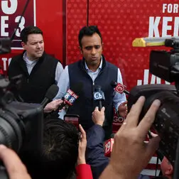
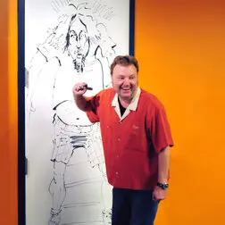
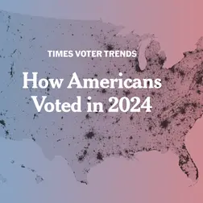

Anthropic’s I.P.O. Prospectus Spells Out a Future of Promise and Peril
Ahead of what could be the largest ever initial public offering, the company painted a nuanced picture: Despite risks, A.I. could bring untold benefits.
4 min read
Ahead of what could be the largest ever initial public offering, the company painted a nuanced picture: Despite risks, A.I. could bring untold benefits.



Supporters and opponents of Prime Minister Benjamin Netanyahu have expressed anxieties about security at home and the future of Israel’s identity.
President Luiz Inácio Lula da Silva’s re-election victory prompted a sharp reversal in financial markets that had expected his opponent to win.
Maps show where Brazil’s progressive president surged ahead to win re-election.
Scientists now know that they shared many of the sophisticated abilities of Homo sapiens. The question is why we are the only humans left standing.